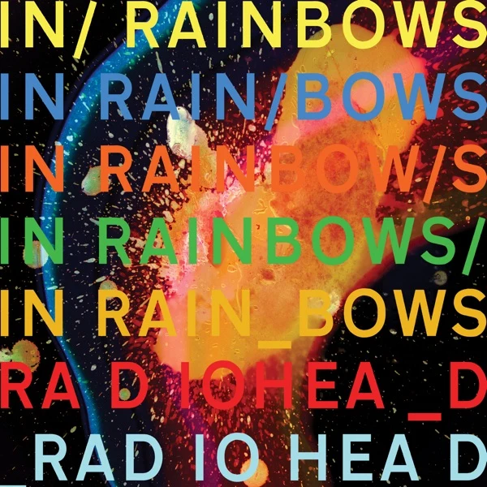

MUSIC / FILMS / THINGS IN PROGRESS
hi, i'm
loveyy.
I make things for the web and desktop, collect feelings from songs and films, and get happily lost in imaginary worlds. There are usually too many tabs open, but that is part of the process.
Artists I’m listening to
A LITTLE MORE CONTEXT
A little about me.
Music, software, game ideas, half-written stories. Different ways of trying to make the inside of my head exist somewhere outside it.
The Breakfast Club shaped something in me, especially Allison and Claire. From Dead Poets Society to I Saw the TV Glow: these are the films I keep close.
Night City, the Oldest House, the end of the road. Worlds to disappear into, and reasons to build my own.
Explore the personal archive ↗THE CREATIVE SIDE OF CODE
Web, desktop, and a little personality.
I’d describe my lane as creative web and desktop development: building thoughtful interfaces, expressive websites, and exploring how software becomes something people can use.
Languages & tools
HTML · CSS · JavaScript · PHP · Python · C# · .NET · Rust · Tauri
Everyday platforms
Windows · macOS · iOS
CURRENT ROTATION
Portishead. Massive Attack.
And the artists that stay.
A collection of what I’m listening to, from new obsessions to familiar records.
Open the artist collection ↗ELSEWHERE